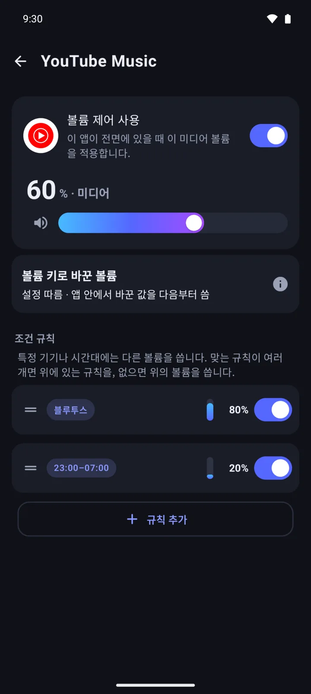
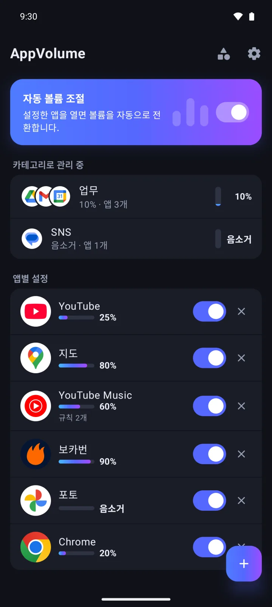
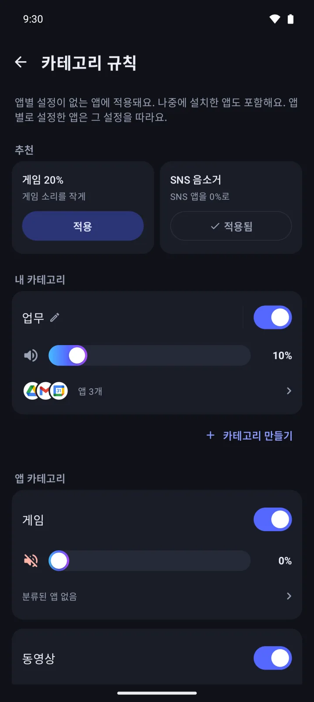
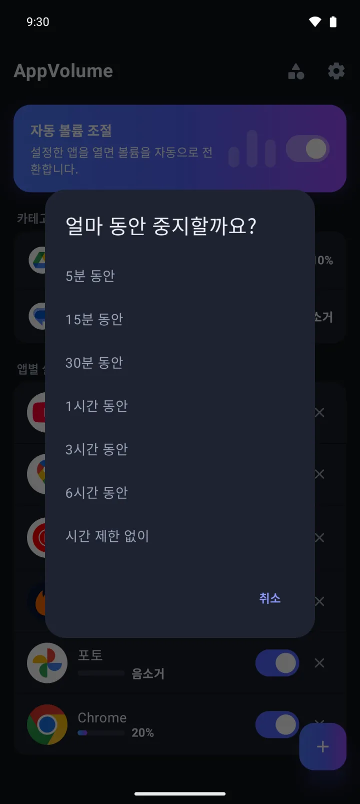
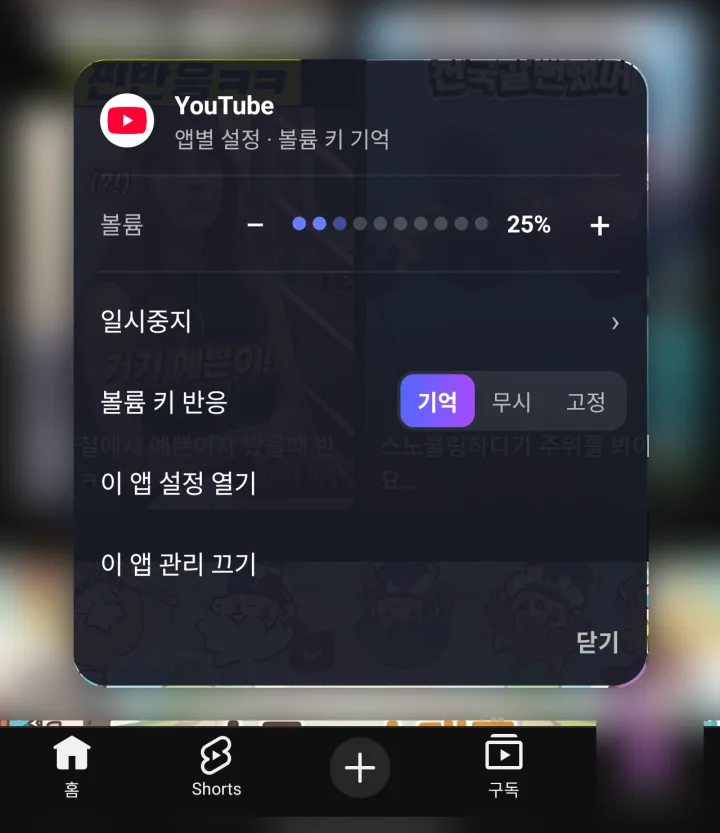

블루투스·이어폰·밤에는 다른 볼륨
조건 규칙으로 스피커, 유선 이어폰, 블루투스로 소리가 날 때나 정한 시간대에 쓸 볼륨을 따로 정해요. 여러 규칙이 맞으면 위에 있는 규칙이 이기고, 끌어서 순서를 바꿔요.

AppVolume은 앱마다 미디어 볼륨을 정해 두면, 그 앱이 화면에 올 때 그 볼륨으로 바꾸고 앱을 나가면 원래 볼륨으로 되돌려 주는 안드로이드 앱이에요. 앱별 볼륨과 음소거는 앱 개수 제한 없이 무료(광고 포함)이고, 광고 제거와 카테고리 규칙 등은 한 번 결제하는 AppVolume Pro에서 열려요.
두 앱의 소리를 따로 섞는 믹서는 아니에요. 안드로이드의 미디어 볼륨은 하나뿐이라, 지금 화면에 있는 앱에 맞춰 그 하나를 바꿔요.
Google Play에서 받기
게임은 음소거, 영상은 작게, 블루투스 이어폰에서는 또 다르게. 앱을 옮길 때마다 볼륨 버튼부터 누르던 일을 AppVolume이 대신해요.
앱마다 미디어 볼륨을 0~100%, 1% 단위로 정해 두면 그 앱이 화면에 올 때 바뀌고, 나가면 원래 볼륨으로 돌아와요. 0%로 두면 음소거되고, 영상을 PIP(화면 속 화면) 창으로 띄워 둔 동안에도 그 볼륨이 유지돼요.
바꾼 값을 무시할지, 새 볼륨으로 기억할지, 정해 둔 볼륨으로 고정할지 골라요. 전체에 한 번에 정해도 되고 앱마다 따로 정해도 돼요.
조건 규칙으로 스피커, 유선 이어폰, 블루투스로 소리가 날 때나 정한 시간대에 쓸 볼륨을 따로 정해요. 여러 규칙이 맞으면 위에 있는 규칙이 이기고, 끌어서 순서를 바꿔요.

Pro의 카테고리 규칙은 게임·동영상·SNS·음악/오디오·뉴스·지도/내비·사진·생산성 8종에 볼륨을 하나씩 정하고, 나중에 설치한 앱에도 적용해요. 자주 쓰는 앱을 직접 묶는 내 카테고리는 무료로 하나 만들 수 있어요.

전체나 앱 하나를 5분부터 6시간까지, 또는 시간 제한 없이 일시중지해요. 알림창의 빠른 설정 타일 '자동 볼륨'으로 바로 멈추고 다시 켤 수도 있어요.

볼륨이 적용되거나 복원되면 화면 위나 아래에 잠깐 알려 줘요. 그 안내의 메뉴에서 볼륨을 조절하거나, 일시중지하거나, 그 앱 관리를 그만둘 수 있어요.

| 무료 | AppVolume Pro | |
|---|---|---|
| 가격 | 무료 | ₩6,900 · 한 번 결제, 구독 아님 |
| 앱별 볼륨·음소거 | ✓ 앱 개수 제한 없음 | ✓ |
| 볼륨 키 모드·일시중지·빠른 설정 타일 | ✓ | ✓ |
| 조건 규칙(기기·시간대) | 2개까지 (앱별·카테고리 합산) | 무제한 |
| 내 카테고리 | 1개 | 무제한 |
| 앱 카테고리 규칙(게임·동영상 등 8종) | — | ✓ |
| 설정 백업·복원 | — | ✓ |
| 광고 | 배너, 앱 시작 광고, 전면 광고 | 없어요 |
이미 만든 규칙과 카테고리는 한도를 넘어도 그대로 동작해요. 가격은 한국 기준이며 지역마다 다를 수 있어요(미국 US$4.99).
| AppVolume | 폰에 내장된 앱별 볼륨 믹서(일부 제조사) | 볼륨 버튼으로 매번 조절 | 볼륨 조절 앱(슬라이더·위젯) | |
|---|---|---|---|---|
| 두 앱이 동시에 소리를 낼 때 따로 조절 | 안 돼요. 화면에 있는 앱 기준으로 미디어 볼륨 하나를 바꿔요 | 대개 돼요 | 안 돼요 | 대개 안 돼요 |
| 앱을 열고 나갈 때 볼륨 전환 | 자동으로 바꾸고, 나가면 되돌려요 | 제조사마다 달라요 | 매번 직접 눌러요 | 대개 직접 조절해요 |
| 블루투스·이어폰·시간대별 다른 볼륨 | 조건 규칙(무료 2개) | 제조사마다 달라요 | 직접 맞춰요 | 앱마다 달라요 |
| 다루는 볼륨 | 미디어 볼륨만 | 제조사마다 달라요 | 미디어·벨소리 등 시스템 볼륨 | 대개 여러 시스템 볼륨 |
| 쓸 수 있는 폰 | 안드로이드 10 이상 | 그 제조사 폰에서만 | 모든 폰 | 앱마다 달라요 |
| 필요한 것 | 접근성 권한. 무료(광고) 또는 한 번 결제하는 Pro | 따로 필요 없어요 | 따로 필요 없어요 | 앱마다 달라요 |
범주 칸은 일반적인 특징이고 폰과 앱마다 다를 수 있어요.
AppVolume이 그런 앱이에요. 앱마다 미디어 볼륨을 정해 두면 그 앱이 화면에 올 때 그 볼륨으로 바뀌고, 앱을 나가면 원래 볼륨으로 돌아와요. 루트가 필요 없고, 상주 알림도 띄우지 않아요.
아니요, 동시에 나는 두 앱의 소리를 따로 섞지는 못해요. 안드로이드의 미디어 볼륨은 하나라서, 음소거한 게임이 화면에 있는 동안은 뒤에서 재생 중인 음악도 함께 작아져요. 폰에 앱별 볼륨 믹서가 내장되어 있다면 이런 용도엔 그쪽이 더 맞을 수 있어요.
네, 그 앱의 볼륨을 0%로 정해 두면 열 때마다 음소거되고 나가면 원래 볼륨으로 돌아와요. 앱 개수 제한 없이 무료예요. 나중에 설치할 게임까지 한 번에 맞추려면 Pro의 카테고리 규칙을 켜면 돼요. 앱이 스스로 밝힌 카테고리를 따르니, 카테고리를 밝히지 않은 앱은 직접 추가해야 해요.
네, 조건 규칙으로 스피커·유선 이어폰·블루투스마다, 또는 정한 시간대에 다른 볼륨을 쓰면 돼요. 시간대는 앱을 열 때의 시각으로 판단해서, 쓰는 도중 시간대가 바뀌면 다음에 열 때부터 적용돼요. 조건 규칙은 무료로 2개까지 만들 수 있어요.
네, 앱별 볼륨과 음소거, 볼륨 키 모드, 일시중지, 빠른 설정 타일은 앱 개수 제한 없이 무료예요. 무료 한도는 조건 규칙 2개(앱별·카테고리 합산)와 내 카테고리 1개예요. 무료판에는 배너, 앱 시작 광고, 전면 광고가 나와요.
네, AppVolume Pro를 사면 배너·앱 시작·전면 광고가 모두 사라지고, 구독이 아니라 한 번 결제예요. 한국에서는 ₩6,900이고, 가격은 지역마다 다를 수 있어요. 카테고리 규칙, 조건 규칙·내 카테고리 무제한, 설정 백업·복원도 함께 열려요.
지금 화면에 어떤 앱이 있는지 알아야 그 앱의 볼륨을 적용할 수 있어서예요. 안드로이드는 일반 앱이 화면 앞의 앱을 알 수 없게 막아 두어서, AppVolume은 접근성 서비스로 그것만 알아내요. 이 서비스가 꺼져 있으면 볼륨이 바뀌지 않고, 꺼지면 알림으로 알려 줘요.
화면에 표시된 텍스트나 입력 내용은 읽지 않고, 앱 이름과 패키지명은 보내지 않아요. 접근성 서비스는 앞에 있는 창의 패키지명·창 클래스 이름과 PIP 창이 있는지만 확인하고, 대신 터치하거나 입력하지 않아요. 사용 통계(Firebase Analytics)로는 안드로이드가 분류한 앱 종류(예: 게임), 볼륨 값, 출력 기기 종류 같은 정보가 가요. 광고(AdMob), 오류 보고(Crashlytics), 구매 확인(Google Play)도 인터넷을 써요.
무시·기억·고정 중에서 고를 수 있어요. 기본은 무시라서 앱 안에서 바꿔도 나가면 정해 둔 볼륨이 그대로이고, 기억은 바꾼 값을 새 볼륨으로 저장하고, 고정은 앱 안에서 바꿔도 정해 둔 볼륨으로 되돌려요. 전체에 한 번에 정해도 되고 앱마다 따로 정해도 돼요.
아니요, 미디어 볼륨만 바꿔요. 벨소리·알림·알람 볼륨은 건드리지 않아요.
네, Pro의 백업·복원으로 설정을 파일로 내보내고 새 기기에서 불러오면 돼요. 백업 파일은 직접 고른 위치에 저장돼요. 계정이나 로그인은 따로 없고, 설정은 기기 안에 저장돼요.
아니요, AppVolume은 안드로이드 10 이상에서만 돼요. iPhone 버전은 없어요.